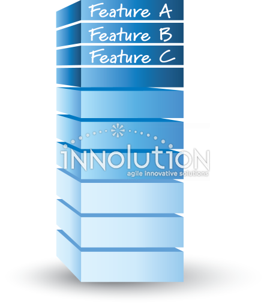

The primary difference between a Product Backlog and a Sprint Backlog lies in their scope, ownership, and time horizon within the Scrum framework. The **Product Backlog** is an evolving, prioritized master list of everything required in the product, including new features, enhancements, bug fixes, and technical work. It is owned and maintained by the Product Owner, who continuously refines and reorders items based on customer feedback, market shifts, and overarching business value. Because it reflects the long-term vision of the entire product lifecycle, it is dynamic and practically never "complete" as long as the product exists. For example, a Product Backlog for an e-commerce platform might contain hundreds of items ranging from immediate priorities like "Integrate Apple Pay" to distant, high-level ideas like "AI-driven personalized product recommendations" or "Augmented reality room preview." In contrast, the **Sprint Backlog** is a short-term, highly focused subset of the Product Backlog selected exclusively for execution during a single Sprint (typically one to four weeks). Created collaboratively during Sprint Planning, the Sprint Backlog is owned entirely by the Developers and includes a defined Sprint Goal, the chosen backlog items, and a granular plan to deliver them. While the Product Backlog remains open to constant reprioritization from external stakeholders, the Sprint Backlog is locked down to protect the team’s focus; only the Developers can modify the tactical plan or tasks needed to achieve the goal during the active iteration. For instance, if the Sprint Goal is to "Streamline mobile checkout," the Sprint Backlog will extract just the "Integrate Apple Pay" user story and break it down into tactical developer tasks such as "Configure Apple Merchant ID," "Implement payment sheet UI in React Native," and "Write API unit tests for webhook verification." In short, the Product Backlog represents the strategic **"What"** and **"Why"** for the product's future, while the Sprint Backlog represents the tactical **"How"** and **"Now"** committed by the engineering team for immediate delivery into a usable increment.
